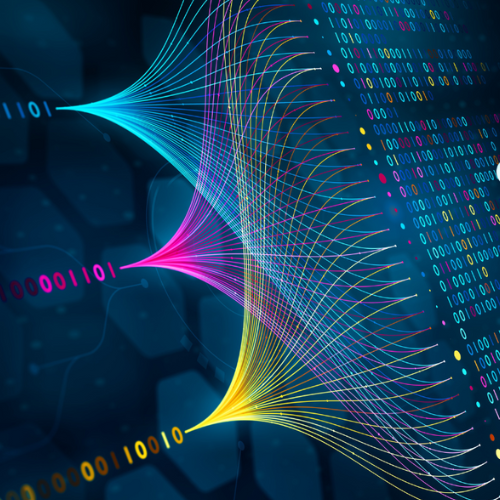
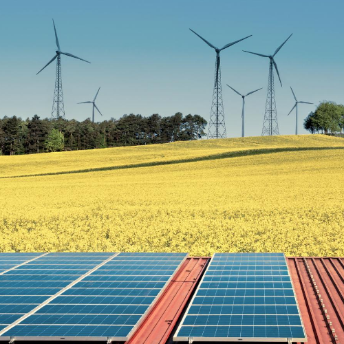

Le programme Sciences et Technologies est un cursus ouvert de BAC+1 à Bac+5 destiné aux profils
scientifiques et
techniques.
Le programme permet d’accéder à l'ensemble des fonctions de l'Ingénierie Informatique,
desTélécommunications et des Energies
Renouvelables. Découvrez ci-dessous les différentes filières
de
ce
programme :
|
Télécommunication - Réseaux Survoler pour voir plus |
Génie logiciel et Réseaux Survoler pour voir plus  |
Sécurité des Systèmes d'Information Survoler pour voir plus |
| Monétique et Transactions Sécurisées Survoler pour voir plus |
Informatique et Multimédia Survoler pour voir plus |
Génie électrique et Energies renouvelables Survoler pour voir plus  |